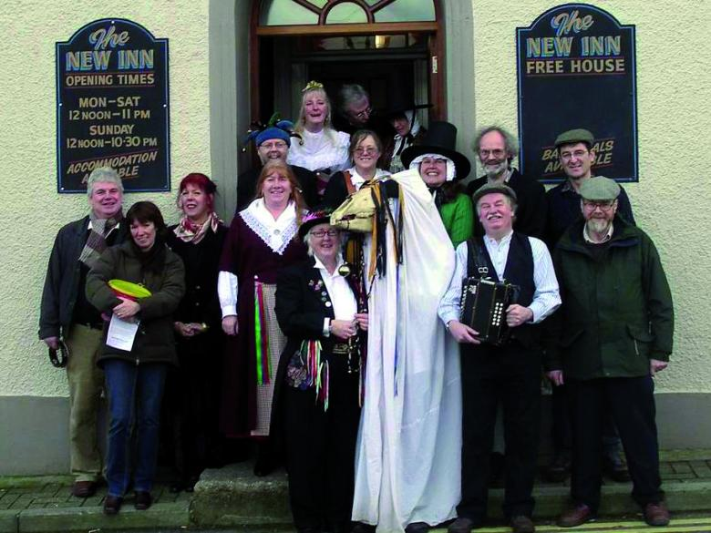

Dead Horse Caroling
Image by Cas Smith from The Mari Lwyd
You’re probably familiar with Christmas caroling, but you’re definitely not familiar with the carolers who might show up at your door in Wales. At some point in December or January, you could open your door to find someone hidden by a ribbon and bell-adorned sheet, holding up a real horse skull on a stick, with a few fellow revelers in tow. As part of this Mari Lwyd (“Gray Mare”) tradition, the group will sing to you and then challenge you to a battle of rhyming insults in Welsh (called a pwnco). After the contest, the party is usually invited inside for refreshments.
Hide The Brooms
Image by Todd Olszewski from USA TODAY N

Yule Goat
Image by Joe Camporeale from USA TODAY Sports